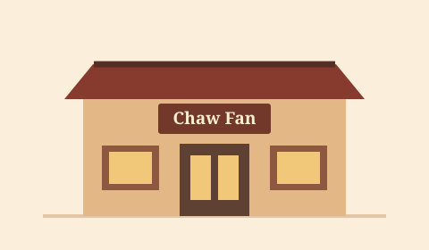

Sucursal Barrio Chino
Dirección: Mendoza 1650, Belgrano
Horarios: Martes a Domingos de 12:00 a 23:30 hs.
Teléfono: (011) 4788-9900
Salón ambientado, mesas redondas tradicionales con plato giratorio y opción para llevar.

Vení a disfrutar de la auténtica experiencia de la cocina china tradicional en cualquiera de nuestros salones.
Consultá las direcciones y los horarios de nuestras sucursales en Barrio Chino y Centro.
Dirección: Mendoza 1650, Belgrano
Horarios: Martes a Domingos de 12:00 a 23:30 hs.
Teléfono: (011) 4788-9900
Salón ambientado, mesas redondas tradicionales con plato giratorio y opción para llevar.
Dirección: Av. Corrientes 1240, San Nicolás
Horarios: Todos los días de 11:30 a 00:00 hs.
Teléfono: (011) 4372-5544
Ideal para almuerzos ejecutivos al wok y cenas después del teatro.
